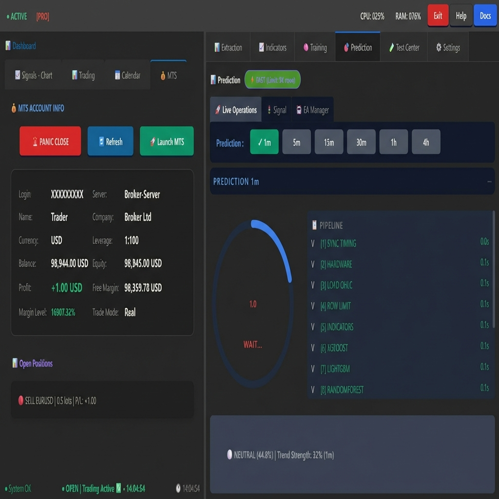
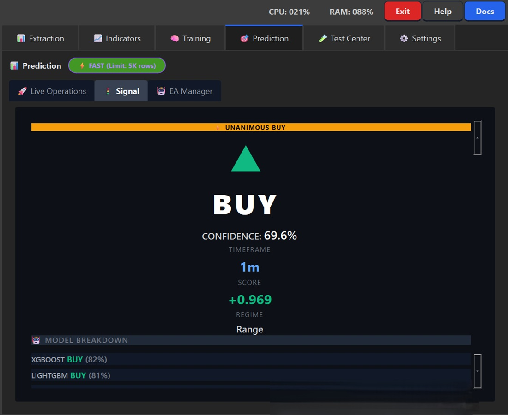
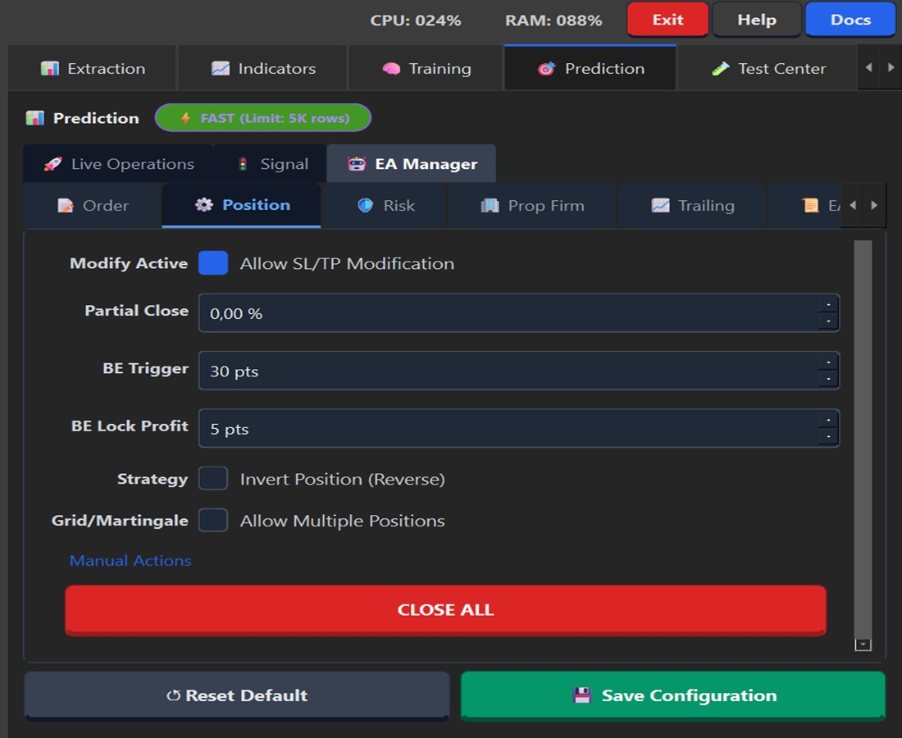
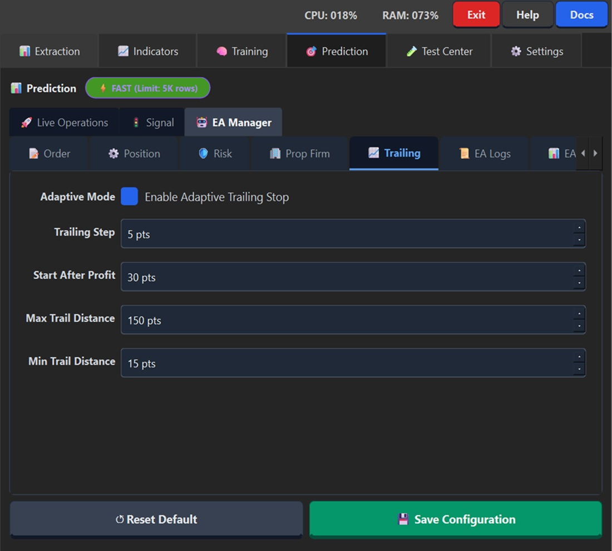
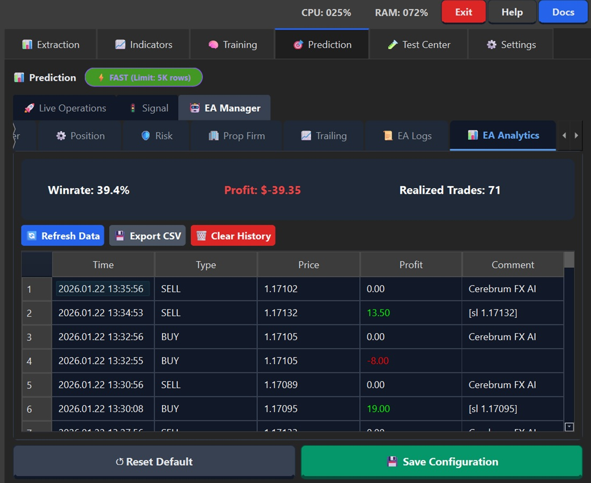
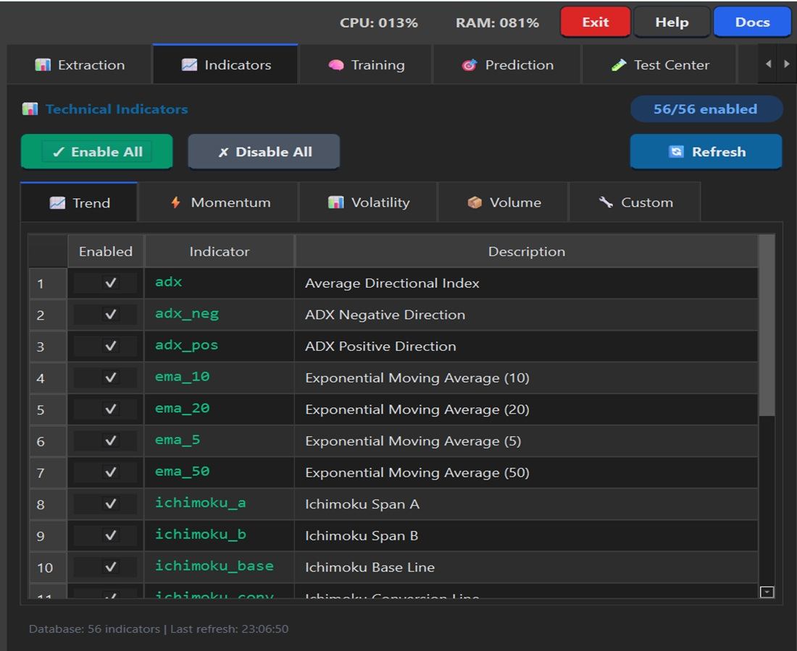
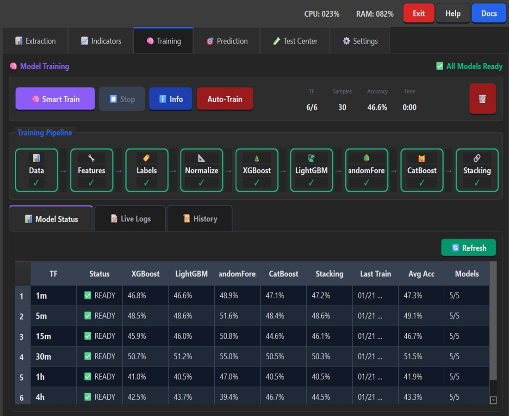
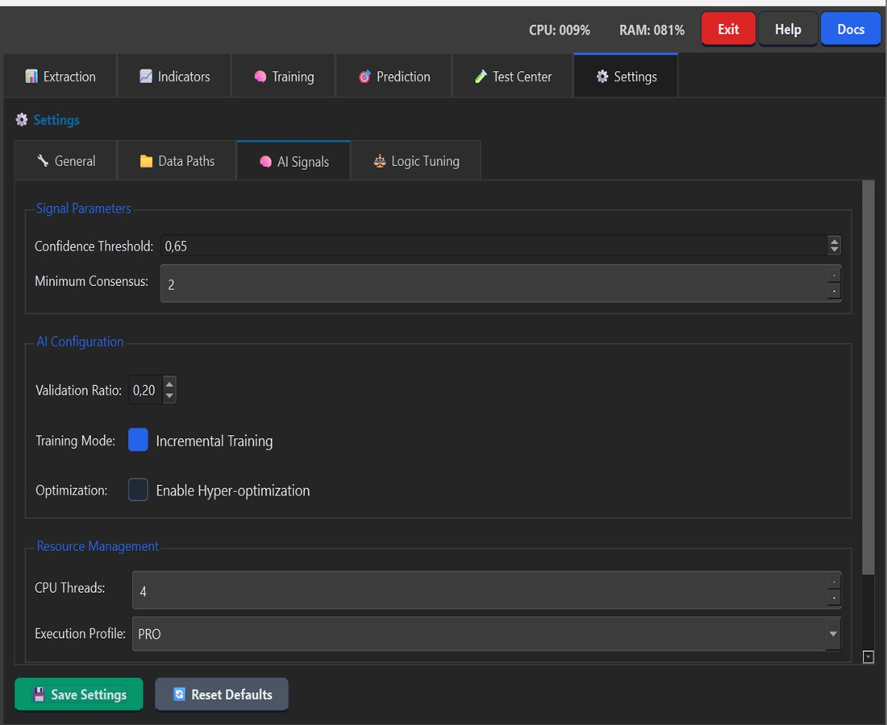
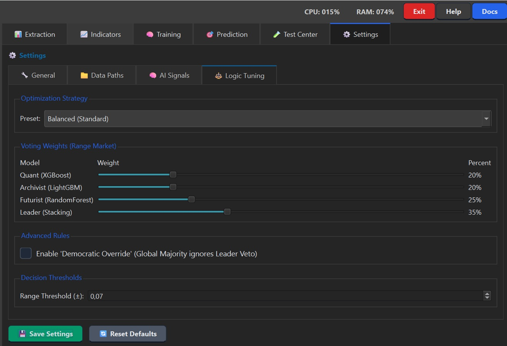

User Manual - Cerebrum FX AI
This guide details each window and field of the Cerebrum FX AI application for optimal usage.
Table of Contents
Dashboard
The Dashboard is the main window displaying MT5 information and open positions.

Dashboard Sub-tabs
Tab |
Description |
|---|---|
Signals - Chart |
Candlestick chart with live price |
Trading |
Trading zone with indicators and SL/TP zones |
Calendar |
Economic calendar with impact events |
MT5 |
MetaTrader 5 account information |
MT5 Account Info Section
Field |
Description |
|---|---|
Login |
MT5 account number |
Server |
Broker server name |
Name |
Account name |
Company |
Broker name |
Currency |
Account currency (USD, EUR…) |
Leverage |
Account leverage (e.g., 1:100) |
Balance |
Account balance |
Equity |
Equity (Balance + Floating P/L) |
Profit |
Floating Profit/Loss |
Free Margin |
Available free margin |
Margin Level |
Margin level in % |
Trade Mode |
Mode (Demo/Real) |
Open Positions
List of open positions with symbol, lots, and P/L in real-time.
Prediction Tab
Live Operations
Prediction Pipeline - Displays calculation steps:
SYNC TIMING - Synchronization
HARDWARE - Resource check
LOAD OHLC - Data loading
ROW LIMIT - Row limitation
INDICATORS - Indicator calculation
XGBOOST / LIGHTGBM / RANDOMFOREST / CATBOOST / STACKING - ML Models
Signal

Element |
Description |
|---|---|
Signal |
Direction (BUY/SELL/NEUTRAL) |
Confidence |
Confidence level (0-100%) |
Timeframe |
Analyzed interval (1m, 5m, 15m…) |
Score |
Raw model score (-1 to +1) |
Regime |
Market regime (Range/Trend) |
Model Breakdown - Vote detail per model:
XGBOOST: Vote and confidence
LIGHTGBM: Vote and confidence
etc.
EA Manager
The EA Manager configures the MQL5 Expert Advisor with 7 tabs.
Order Tab

Field |
Description |
Recommended Value |
|---|---|---|
Volume (Lots) |
Position size |
0.01 - 1.0 |
Order Type |
MARKET / LIMIT / STOP |
MARKET |
Direction |
AUTO / BUY / SELL |
AUTO (follows signal) |
Entry Price |
Entry price (LIMIT/STOP) |
0 if MARKET |
Fixed SL (Initial) |
Initial Stop Loss in points |
50-200 |
Hard Stop Loss |
Maximum SL in points |
100-500 |
Take Profit |
TP in points |
50-300 |
Position Tab

Field |
Description |
|---|---|
Modify Active |
Allows SL/TP modification |
Partial Close |
% partial close at TP1 |
BE Trigger |
Profit points before Breakeven |
BE Lock Profit |
Secured profit points at BE |
Strategy |
Invert Position (Reverse trading) |
Grid/Martingale |
Allow Multiple Positions |
CLOSE ALL - Closes all positions.
Risk Tab

Field |
Description |
Recommended Value |
|---|---|---|
Risk / Trade |
Risk per trade in % |
0.5% - 2% |
Money Mgmt |
Dynamic Lot (auto calculation) |
Disabled by default |
Max Drawdown |
Max DD before pause (%) |
3% - 5% |
Stop after Loss |
Consecutive SL count |
2-3 |
Equity Hard Stop |
Minimum equity $ amount |
0 = disabled |
Max Positions |
Maximum simultaneous positions |
1 |
Max Volume |
Maximum total volume |
10 lots |
Session |
Trading time filter |
7:00 - 20:00 UTC |
Prop Firm Tab

Strict rules for trading challenges.
Field |
Description |
FTMO/MFF Value |
|---|---|---|
Prop Firm Mode |
Enables rules |
✅ Enabled |
Max Daily Loss |
Maximum daily loss |
4% - 5% |
Max Total Drawdown |
Maximum total loss |
8% - 10% |
Risk Per Trade |
Risk per trade |
0.5% |
Profit Target |
Profit target |
8% - 10% |
News Filter |
Avoids high-impact news |
✅ Enabled |
Neutral Stop |
Closes if NEUTRAL signal with loss |
30-50 pts |
Trailing Tab

Adaptive Trailing Stop that tightens with profit.
Field |
Description |
|---|---|
Adaptive Mode |
Enables adaptive trailing |
Trailing Step |
Trailing distance in points |
Start After Profit |
Profit points before activation |
Max Trail Distance |
Maximum trailing distance |
Min Trail Distance |
Minimum distance (protection) |
EA Logs Tab

Real-time Expert Advisor logs.
Button |
Function |
|---|---|
Refresh Logs |
Refreshes logs |
Manual EA Link |
Manual EA connection |
Download Log |
Downloads log file |
EA Analytics Tab

Performance statistics.
Metric |
Description |
|---|---|
Winrate |
% of winning trades |
Profit |
Total Profit/Loss |
Realized Trades |
Number of closed trades |
History table with Time, Type, Price, Profit, Comment.
Dashboard - Sub-tabs
Calendar Tab

Economic calendar with impact events.
Element |
Description |
|---|---|
🔴 High |
High impact (NFP, FOMC) |
🟠 Medium |
Medium impact |
⚪ Low |
Low impact |
Signals-Chart Tab

Candlestick chart with:
Timeframe selector (1m to 4h)
Live price with direction
Fullscreen button
Trading Tab

Advanced trading view:
Element |
Description |
|---|---|
Position Bar |
Price position in range |
SELL ZONE |
Sell zone (price < pivot) |
NEUTRAL |
Neutral zone |
BUY ZONE |
Buy zone (price > pivot) |
SAFE LOW/HIGH |
Support/Resistance levels |
Range |
Range in pips |
ATR |
Average True Range |
K-Value |
Volatility measurement |
Trend Strength |
Trend strength (%) |
Extraction

OHLC data download and management.
OHLC Files Tab
Column |
Description |
|---|---|
TF |
Timeframe (1m, 5m, 15m…) |
Status |
Ready / Outdated / Missing |
Candles |
Number of candles |
Train (50%) |
Training data |
Val (50%) |
Validation data |
First Date |
First candle |
Last Date |
Last candle |
Button |
Function |
|---|---|
Smart Extract |
Smart extraction (only needed data) |
From [Year] |
Data start year |
Indicators

Technical indicator management.
Categories
Tab |
Indicators |
|---|---|
Trend |
EMA, SMA, ADX, Ichimoku… |
Momentum |
RSI, MACD, Stochastic… |
Volatility |
ATR, Bollinger, Keltner… |
Volume |
OBV, MFI… |
Custom |
Custom indicators |
Button |
Function |
|---|---|
Enable All |
Enables all indicators |
Disable All |
Disables all |
Refresh |
Recalculates indicators |
Training

Machine Learning model training.
Training Pipeline
Visual steps: Data → Features → Labels → Normalize → XGBoost → LightGBM → RandomForest → CatBoost → Stacking
Model Status
Column |
Description |
|---|---|
TF |
Model timeframe |
Status |
READY / TRAINING / OUTDATED |
XGBoost/LightGBM/… |
Each model’s accuracy |
Avg Acc |
Average accuracy |
Models |
Ready models (e.g., 5/5) |
Settings
General Tab

Field |
Description |
|---|---|
MT5 Path |
Path to terminal64.exe |
Symbol |
Trading pair (EURUSD) |
Install / Deploy EA |
Installs EA in MT5 |
Enable Audio Alerts |
Sounds for signals |
Auto-Connect MT5 |
Auto-connect on startup |
Data Paths Tab

Field |
Description |
|---|---|
OHLC |
Raw data folder |
Indicators |
Calculated indicators folder |
Features |
ML features folder |
Models |
Trained models folder |
Signals |
EA communication folder |
AI Signals Tab

Field |
Description |
|---|---|
Confidence Threshold |
Minimum confidence threshold (0.65 = 65%) |
Minimum Consensus |
Minimum models in agreement |
Validation Ratio |
Train/validation ratio (0.20 = 20%) |
Incremental Training |
Incremental training mode |
Hyper-optimization |
Hyperparameter optimization |
CPU Threads |
Calculation threads |
Execution Profile |
PRO / FAST / ECO |
Logic Tuning Tab

Section |
Description |
|---|---|
Optimization Strategy |
Preset: Balanced / Opportunist / Guardian |
Voting Weights |
Model weights in voting |
Democratic Override |
Majority ignores Leader |
Range Threshold |
Range detection threshold |
Shortcuts and Best Practices
Recommended Workflow
Extraction → Smart Extract (up-to-date data)
Indicators → Verify all enabled
Training → Smart Train if models outdated
Settings → Configure thresholds
EA Manager → Configure risk management
Prediction → Launch predictions
Prop Firm Tips
Max Daily Loss: 4%
Max Drawdown: 8%
Risk per trade: 0.5%
Enable News Filter
Session: 7:00-20:00 UTC
Document generated for Cerebrum FX AI v1.2